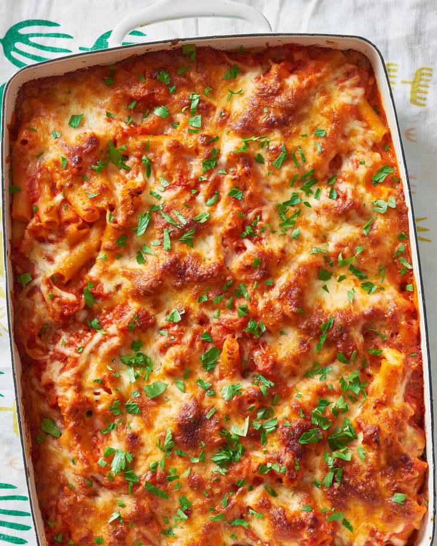

Back to main page
Baked Ziti

Summary
I love cheese, the more the merrier, for me that is. Baked ziti is the perfect way to load up a bunch of cheese and also leave me with enough food to have for a few days. Below is the recipe I found for a great meatless ziti with rich sauce and all the cheese you can ask for.
Ingredients
- 1 6oz yellow onion
- 3 cloves of garlic
- 11/2 ounces of Parmesan cheese
- 2 tablespoons of olive oil
- 1/2 teaspoon of red pepper flakes
- 5 cups of marinara sauce
- 11/4 teaspoons of kosher salt
- 1 tablespoon of freshly ground black pepper
- 1 pound of dried ziti pasta
- 1 cup of ricotta cheese
- 8 ounces of shredded mozzarella cheese
Steps
- Finely chop 1 medium yellow onion and 3 garlic cloves. Finely grate 1 1/2 ounces Parmesan cheese (about 1/2 cup).
- Arrange a rack in the middle of the oven and heat the oven to 375°F. Meanwhile, bring a large pot of heavily salted water to a boil over medium-high heat. Make the sauce while the water is heating.
- Heat 2 tablespoons olive oil in a large pot or Dutch oven over medium heat until shimmering. Add the onion, garlic, and 1/2 teaspoon red pepper flakes. Season with kosher salt and black pepper, and cook, stirring occasionally, until softened, about 12 minutes. Add 5 cups marinara sauce and 1 teaspoon of the kosher salt, stir to combine, and bring to a simmer. Remove the pot from the heat.
- Add 1 pound dried ziti or penne pasta to the boiling water and cook according to package directions until al dente. Meanwhile, place 1 cup ricotta cheese, 1/4 cup of the Parmesan, and remaining 1/4 teaspoon kosher salt in a small bowl, and stir to combine.
- When the pasta is ready, drain and return the pasta to the now-empty pot. Add half of the sauce (about 3 cups) and stir until the pasta is well-coated. Taste and season with kosher salt and black pepper as needed. Add the ricotta mixture to the pasta and fold it in, leaving big pockets of ricotta here and there.
- Transfer half of the pasta mixture into a 9x13-inch baking dish and spread into an even layer. Evenly sprinkle with 1 cup of the shredded mozzarella cheese. Top with the remaining pasta in an even layer. Pour any remaining sauce over the pasta and spread into an even layer. Sprinkle evenly with the remaining 1 cup mozzarella and remaining 1/4 cup Parmesan.
- Bake uncovered until the edges are bubbling and the cheese is completely melted and browned in spots, about 30 minutes. Let cool for 15 minutes before serving.